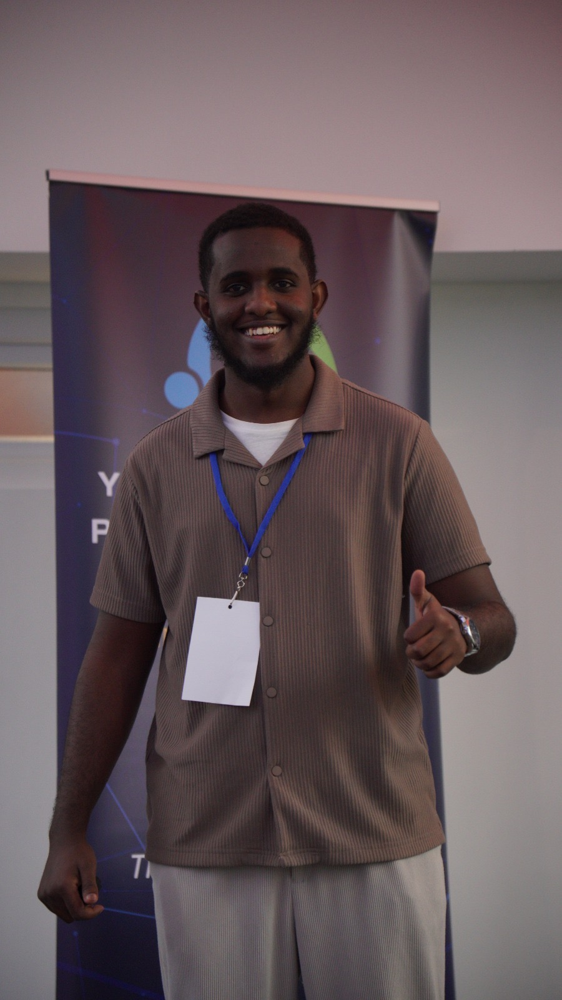

Manchester,uk

I'm 21 years old and I'm someone who enjoys exploring ideas, creating content, and learning through experience.I've always had a strong interest in football, traveling,videoghraphy, and anything connected to film and media
Over the years , I've traveled to more than 15 countries, and those experiences have helped shaped the way I seethe wold . I enjoy meeting different people, learning from new places, and using those moments to build creatively and perspective.
Volounteering at alfurqan mosque as a media lead and content devoloper and a videographer.
currently enrolled in AWS re/start program, where i an learning cloud fundamentals, cloud computing, and software development. I am also working towards earning the AWS Certified Cloud Practitioner certification, which will validate my understanding of AWS services and cloud concepts.